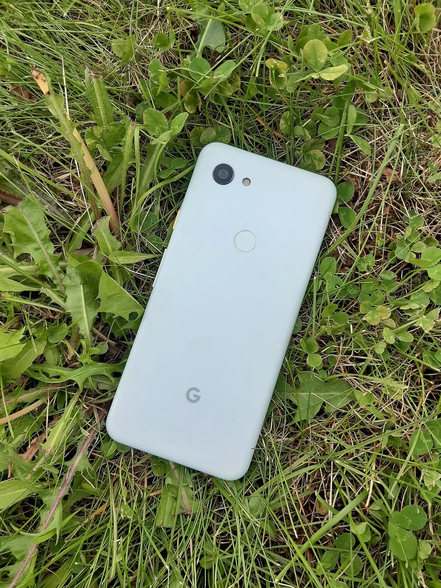

Pixel 無限相簿機型總整理：Pixel 1 到 5 的條件與期限，買二手前先看
「我的 Pixel 還有無限相簿嗎？」「Pixel 5 的無限相簿什麼時候到期？」「想買一支二手 Pixel 當上傳機，買哪一支？」這三個問題在 PTT 上每隔幾個月就會再被問一次。這篇只回答這三件事：每一代 Pixel 現在的條件、到底有沒有期限，以及買二手之前要檢查什麼。
如果你還不知道無限相簿是什麼，先看入門篇；已經有 Pixel、想知道怎麼把 OneDrive 的相片搬過去，請看完整教學。
先講結論
- 現在還有免費無限備份的，是 Pixel 5 和更早的機型。 Pixel 5a、Pixel 6 和之後的機型都沒有。
- 只有第一代 Pixel 是原始畫質。 Pixel 2 到 Pixel 5 免費的是「壓縮畫質」。
- 以「今天開始備份」來說，Pixel 2、3、3a、4、4a、5 的條件已經一樣了。 Pixel 2 和 3 跟其他機型的差別，只剩下以前備份的內容怎麼算。
- Google 說明頁目前沒有寫結束日期。 但 Google 改過兩次條件，也沒有承諾以後不改。
一代一代看
下表是 2026 年 11 月 27 日重新對照 Google 相簿說明整理的，用字照說明頁：
| 機型 | 現在新備份的內容 | 以前備份的內容 | 選「原始畫質」的話 |
|---|---|---|---|
| Pixel（第 1 代，2016） | 原始畫質，免費無限 | 同左 | 本來就是原始畫質；這一代不能選壓縮畫質 |
| Pixel 2 | 壓縮畫質，免費無限 | 2021 年 1 月 16 日當天或之前以原始畫質備份的，仍免費以原始畫質儲存 | 計入 Google 帳戶儲存空間 |
| Pixel 3 | 壓縮畫質，免費無限 | 2022 年 1 月 31 日當天或之前以原始畫質備份的，仍免費以原始畫質儲存 | 計入 Google 帳戶儲存空間 |
| Pixel 3a 至 Pixel 5 | 壓縮畫質，免費無限 | 同左 | 計入 Google 帳戶儲存空間 |
| Pixel 5a、Pixel 6 及之後 | 沒有免費無限備份 | 照一般規則 | 照一般規則 |
「壓縮畫質」就是以前的「高畫質」，英文介面叫 Storage saver：超過 1,600 萬像素的相片會縮成 1,600 萬像素，1080p 以上的影片會降成 1080p，隱藏式輔助字幕之類的資訊可能遺失。差多少、哪些人一定要留原檔，完整教學裡有一段專門講。
Maurizio Pesce from Milan, Italia, CC BY 2.0, Wikimedia Commons
Pixel 5 的無限相簿會到期嗎？
說明頁上沒有寫任何結束日期，Pixel 3a 至 Pixel 5 和第一代 Pixel 都一樣。可是「沒寫日期」不等於「永久」，Google 過去改過兩次：
- Pixel 2： 原本是原始畫質免費，2021 年 1 月 16 日之後備份的內容改成只有壓縮畫質免費。
- Pixel 3： 同樣的事發生在 2022 年 1 月 31 日之後。
這兩次都有一個共同點：改的是之後才備份的內容。 期限前用原始畫質備份的相片，Google 寫明「仍可免費以原始畫質儲存」。另外，2021 年 6 月 1 日以前所有人用「高畫質」備份的相片，現在也還是不計入儲存空間。
所以 2022 年 PTT 上那篇「pixel3系列的google無限相簿到期後」的答案是：Pixel 3 沒有失去無限相簿，只是從原始畫質降成壓縮畫質，條件變得跟 Pixel 3a、4 一樣。
這是過去的做法，不是對未來的保證。比較實際的想法是：趁現在還能用就用，雲端那份當作「找得到、分享方便的副本」，原檔自己另外留一份。另外 Google 也寫明，超過 2 年沒有使用 Google 相簿，相片和影片可能會遭到刪除；如果帳戶受到這項規定影響，Google 說會在刪除前至少 3 個月寄電子郵件通知。
名字很像、條件不一樣的幾組
- Pixel 3 和 Pixel 3a： 現在新備份的條件一樣，都是壓縮畫質免費。差別只在 2022 年 1 月 31 日以前備份的內容。如果你要買的是「上傳機」，兩支在這件事上沒有差。
- Pixel 5 和 Pixel 5a： 只差一個字母，結果完全相反。Pixel 5 有，Pixel 5a 沒有。看到「Pixel 5 系列」這種寫法，一定要問清楚是哪一支。
- XL 版本： 說明頁只寫世代名稱（Pixel、Pixel 2、Pixel 3、Pixel 3a 至 Pixel 5），沒有一個一個列出 Pixel XL、2 XL、3 XL 這些大螢幕版本。同一代的 XL 多半會被當成同樣條件，但這不是 Google 的字句。
- Pixel 4a 和 Pixel 4a (5G)： 同樣的情況。說明頁寫的是「Pixel 3a 至 Pixel 5」這個範圍，沒有特別列出 4a (5G)。
- Pixel C、Pixel Slate、Pixel Tablet： 名字有 Pixel，但不在說明頁列出的機型裡，不要當成無限相簿機買。
只要不是說明頁逐字寫到的型號，就用下面「小量測試」的方法自己確認一次。

Divourie, CC BY 4.0, Wikimedia Commons
那現在該買哪一支？
既然 Pixel 2 到 5 的條件已經一樣，選哪一支就不是看「無限相簿的條件」，而是看手機本身：
- 要原始畫質： 只能找第一代 Pixel。它是 2016 年的手機，電池和儲存晶片都老了，二手也越來越難找到狀況好的。
- 只要壓縮畫質： 越新的機型通常越好用，電池、儲存空間和 Android 版本都比較有餘裕。Pixel 5 是名單上最新的一支。
- 所有候選機都已經沒有更新： Google 的「瞭解 Google Pixel 手機取得軟體更新的時間」把 Pixel 5a 和更早的機型列為「不會再收到 Android 版本更新和安全性更新」。拿來當主力機要想清楚；只當上傳機的話，建議只登入 Google 相簿要用的帳戶，少裝其他 App，不要拿來處理網銀或工作資料。
- 儲存空間： 舊 Pixel 容量不大，容量越大，一次能放進去等備份的相片越多，分批的次數就越少。
買二手 Pixel 上傳機的檢查清單
- 確認型號。 開機後到「設定」→「關於手機」看機型名稱，不要只看外盒或賣家標題，特別是 5 和 5a。
- 確認賣家已經移除自己的 Google 帳戶。 依 Google 說明「防止他人擅自使用您的裝置」，受保護的裝置恢復原廠設定後，如果在設定過程中無法提供原本的螢幕鎖或 Google 帳戶密碼，就完全無法使用這部裝置；要關閉保護，必須從裝置中移除那個 Google 帳戶。面交時請當場重設，再用你自己的帳戶完成設定。
- 看電池。 背蓋鼓起、螢幕被頂起、機身變形，或是一直自己重開機的，不要買。上傳機常常要邊充電邊傳很久，電池狀況比外觀刮痕重要。
- 看 Android 版本。 「設定」→「關於手機」裡看得到。如果之後想用我們的 DriveSync 從 OneDrive 直接搬相片，它的「直接存到
DCIM/Camera」需要 Android 10 以上。 - 拿到手先小量測試。 用自己的帳戶登入，在 Google 相簿右上角的大頭貼 →「Google 相簿設定」→「備份」→「相片和影片畫質」選好畫質（第一代以外選「壓縮畫質」），放幾十張相片進
DCIM/Camera，等備份完成，再到 Google One 的儲存空間頁面看用量有沒有增加。沒有增加才開始大量搬；別支手機拍的相片，也照這個方法先測一小批。
網路上也有人討論用 Magisk 改機或模擬器讓其他手機「假裝」成舊 Pixel。Google 的說明頁只講到機型本身，完全沒有提到這類做法，我們無法確認 Google 怎麼看待它，這篇不討論，也不建議拿存著重要相片的帳戶去試。
常見問題
舊 Pixel 壞掉了，之前備份上去的相片會開始算空間嗎？
Google 的說明頁沒有寫這種情況。可以參考的只有過去兩次改條件時的做法：已經備份的內容維持原本的算法。但這不是 Google 對「手機壞掉」的說明。保險的做法是原檔自己另外保存，不要讓 Google 相簿成為唯一的一份。
一定要用這支 Pixel 拍的相片才算嗎？
說明頁寫的是「從裝置備份」，沒有明寫要用這支 Pixel 拍，也沒有明寫別支手機拍的也算。入門篇有一段專門講這件事，結論一樣：先放一小批測試，看用量有沒有增加。
主力機和上傳機要用同一個 Google 帳戶嗎？
要讓相片出現在你平常看的那個 Google 相簿，Pixel 就要登入同一個帳戶。但主力機上的 Google 相簿如果也用這個帳戶開著備份，主力機傳上去的那份會照常計入空間，所以通常會把主力機的備份關掉，只讓 Pixel 負責上傳。
相片在 OneDrive 的話
很多人買上傳機，是因為相片堆在 OneDrive，OneDrive 又滿了。我們做了一個 Android App DriveSync，裝在 Pixel 上就能把 OneDrive 的相片和影片直接搬進 DCIM/Camera，每個檔案驗證完整後才刪除 OneDrive 上的原檔。它是獨立開發的 App，和 Google、Microsoft 沒有關聯；免費版單一檔案上限 100 MB，也沒有排程自動搬移的功能。搬完記得清空 OneDrive 資源回收筒，空間才會真的釋出，詳細步驟在完整教學。